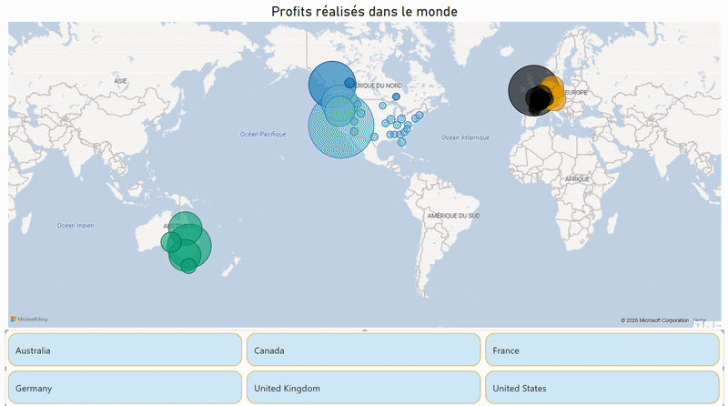
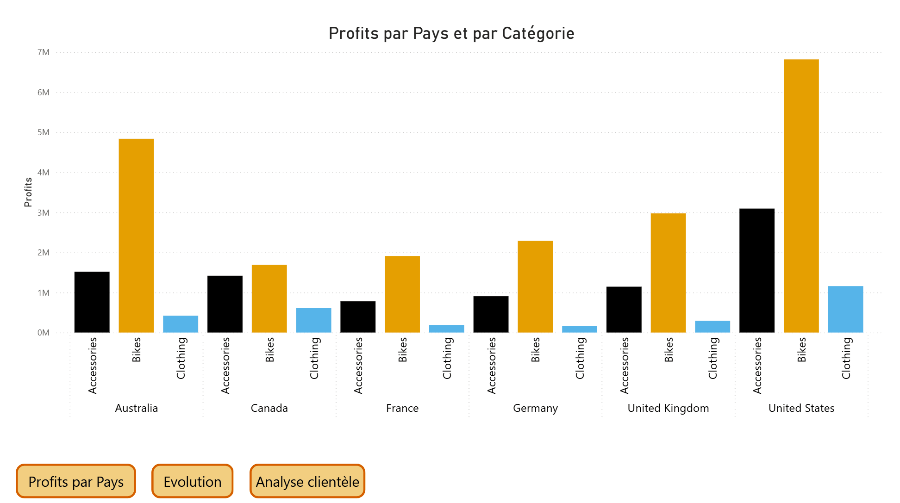
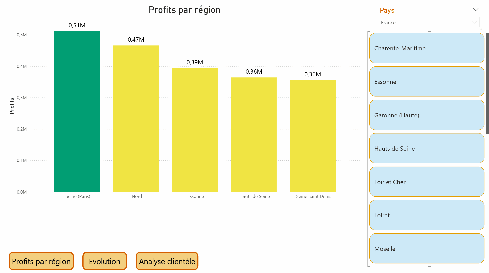
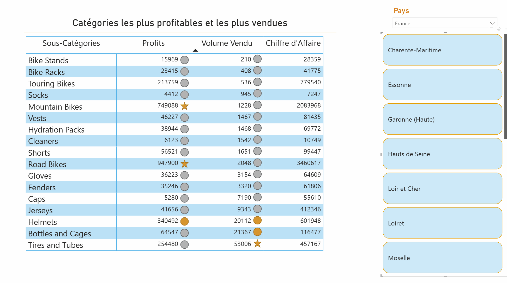
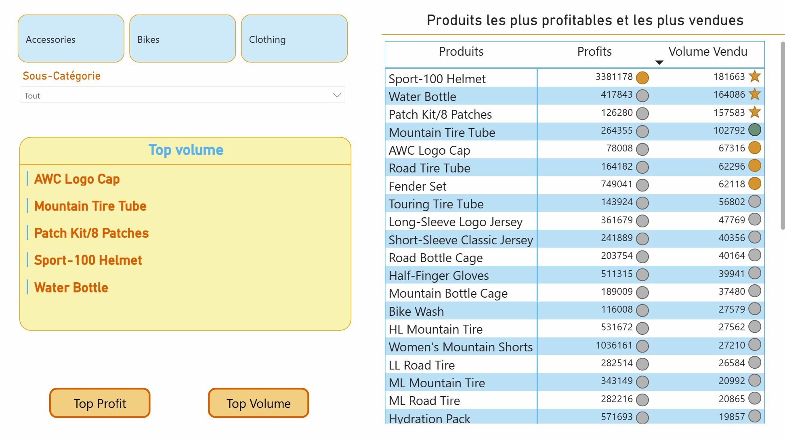

Amélie Tran / Portfolio
Business Intelligence : Stratégie de Lancement d'une Boutique de Cyclisme
Le Challenge
Comment garantir la stabilité et la rentabilité d'une petite structure face à l'incertitude du marché ? Avec un capital limité, chaque erreur de stock ou d'emplacement peut être fatale. Mon défi était de transformer une intuition commerciale en une stratégie de pilotage infaillible pour convaincre les investisseurs.
Réflexion Stratégique
Ma démarche a été guidée par un principe fondamental : la maîtrise du risque financier. Pour une petite boutique, la survie ne dépend pas du volume global, mais de la pertinence locale. J'ai donc articulé ma réflexion autour de trois axes :
Implantation Stratégique
Identification d'un "point d'équilibre" territorial : une zone à forte densité urbaine et pouvoir d'achat stable, mais non saturée, où l'offre spécialisée reste insuffisante.
Équilibre Flux/Marge
Stratégie de stock hybride : volume sur les accessoires (générateurs de flux) et flux tendu sur les vélos haute performance (VAE, Gravel) pour optimiser la trésorerie.
Agilité Décisionnelle
Conception d'un outil de pilotage pour pivoter instantanément selon les tendances de ventes et l'évolution de la clientèle, transformant la donnée brute en décisions concrètes.
Le Système de Pilotage (5 Pages)
Ce dashboard n'est pas une simple illustration, c'est l'outil central de gestion de la boutique. Il permet de passer d'une vision stratégique mondiale à une exécution opérationnelle locale.

Vision Macro & Géographique
Identification des foyers de profit à l'échelle mondiale avec filtrage dynamique par pays et région sur carte interactive.
Objectif : Validation du potentiel marché
Performance & Démographie
Analyse de l'évolution temporelle des volumes et répartition de la clientèle par tranche d'âge et sexe pour affiner le marketing.
Objectif : Ciblage de l'audience active
Granularité Régionale
Zoom sur les spécificités locales pour valider l'implantation physique et le comportement d'achat par territoire.

Optimisation du Mix-Produit
Tableau de bord des sous-catégories triées par profit et volume. Utilisation d'icônes pour identifier instantanément les segments à fort CA.

Sélection "Star Products"
Identification des 5 produits les plus vendus et les plus rentables. Le guide ultime pour la mise en vitrine et le réassort.